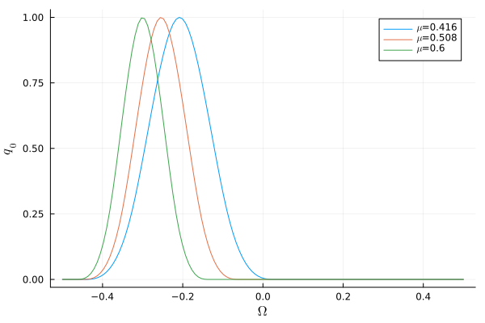

Bump as Initial Condition
In here we describe the initial condition used for the discretized linear wave and the Toda lattice. The initial conditions are based on the following third-degree spline (also used in [2]):
\[ h(s) = \begin{cases} 1 - \frac{3}{2}s^2 + \frac{3}{4}s^3 & \text{if } 0 \leq s \leq 1 \\ \frac{1}{4}(2 - s)^3 & \text{if } 1 < s \leq 2 \\ 0 & \text{else.} \end{cases}\]
Plotted on the relevant domain it takes the following shape:
Taking the above function $h(s)$ as a starting point, the initial conditions for the linear wave equations are modelled with
\[ q_0(\omega;\mu) = h(s(\omega, \mu)).\]
Further for $s(\cdot, \cdot)$ we pick:
\[ s(\omega, \mu) = 20 \mu \left|\omega + \frac{\mu}{2}\right|\]
And we end up with the following choice of parametrized initial conditions:
\[ q_0(\mu)(\omega).\]
Three initial conditions and their time evolutions are shown in the figure below. As was required, we can see that the peak gets sharper and moves to the left as we increase the parameter $\mu$; the curves also get a good coverage of the domain $\Omega$.
# Plot our initial conditions for different values of μ here!
using GeometricProblems: compute_initial_condition, compute_domain
μ_vals = [0.416, 0.508, 0.600]
Ñ = 128
Ω = compute_domain(Ñ)
ics = [compute_initial_condition(μ, Ñ) for μ in μ_vals]
p = plot(Ω, ics[1].q, label = L"\mu"*"="*string(μ_vals[1]), xlabel = L"\Omega", ylabel = L"q_0")
plot!(p, Ω, ics[2].q, label = L"\mu"*"="*string(μ_vals[2]))
plot!(p, Ω, ics[3].q, label = L"\mu"*"="*string(μ_vals[3]))
png(p, "ics_plot")
nothing